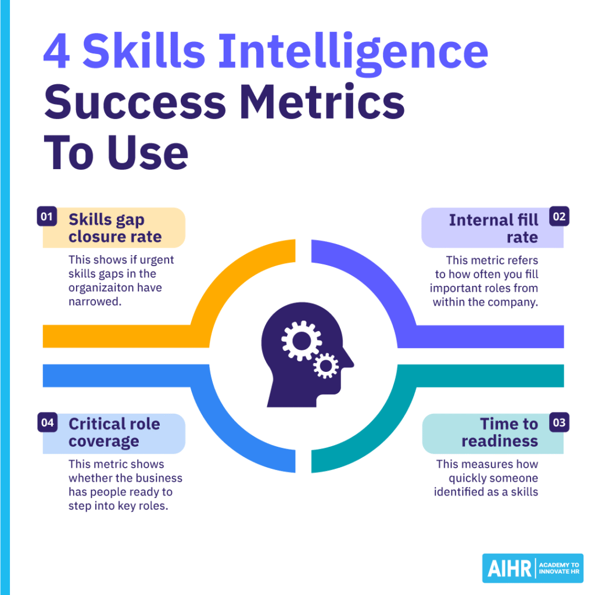

技能智能：定义、运作方式与最佳平台
DataHot 速览
本文介绍技能智能如何帮助企业掌握员工现有能力并预测未来业务需求。世界经济论坛报告称，预计五年内39%的员工核心技能将发生变化。文章提出通过技能数据而非仅凭编制来识别能力缺口，并建议采取发展、重新部署或招聘等行动。还讨论了技能分类法、最佳平台及衡量技能智能成效的四个成功指标。
为什么值得关注：数据从业者可了解如何将技能数据用于劳动力决策，是组织人才分析领域的参考方法论。
译文
AI 逐段翻译技能情报帮助你了解员工现在能做什么，以及企业未来需要什么。世界经济论坛（WEF）报告称，雇主预计39%的劳动者核心技能将在五年内发生变化。借助技能情报，你可以将这种转变转化为更清晰的人力决策。然而，仅靠人数无法告诉你风险在哪里。
The 经合组织（OECD）的《成人技能调查》也指出了更广泛的挑战：使技能与不断变化的工作相匹配。要解决这个问题，你必须确定你的员工队伍拥有哪些技能、差距在哪里，以及下一步该怎么做。本文解释了技能情报如何运作、你可以使用哪些平台和软件来支持它，以及如何判断你的技能情报工作是否有效。
目录人力资源中的技能情报是什么？ 技能情报与技能管理 技能情报如何运作？4个步骤 技能分类法与技能本体论 值得考虑的最佳技能情报平台和软件 如何衡量技能情报是否有效：4个成功指标 常见问题
关键要点
- 技能情报提供对当前劳动力能力的视图，而不是基于职位名称的静态快照。
- 它将技能数据与业务优先事项联系起来，以便你决定何时培养、重新部署或招聘。
- 技能规划通过显示工作所需的能力来增加深度到人数规划中。
- 价值来自于行动。跟踪差距缩小、内部填补率、就绪时间和关键角色覆盖率。
查看更多
人力资源中的技能情报是什么？
如果你的CEO问公司是否有技能来交付新的人工智能项目，你能在不使用另一次技能调查的情况下回答吗？技能情报可以帮助你跳过这一步，并提供你组织AI能力的准确画面。
人力资源中的技能情报是将员工技能与业务需求进行持续匹配的做法。你不依赖人数或职位名称，而是关注人们实际能做什么。你可以利用来自HRIS和LMS的数据，或者使用绩效评估、项目历史和员工技能评估作为技能情报的一部分。
与一次性技能审计不同，技能情报随着人员的成长、角色变化、加入或离开而更新。这为你提供了最新的证据，帮助你决定何时培养现有员工、将人员调动到新角色或外部招聘。
技能情报还支持更基于技能的方法来进行劳动力规划。好消息是，你不需要大量的技术投资就可以开始。相反，你可以从已有的劳动力数据开始，然后专注于业务最需要的技能。
技能情报与技能管理
以下是两者之间的关键区别：
| 领域 | 技能情报 | 技能管理 |
| 它是什么 | 将员工技能与业务需求进行持续匹配的做法 | 人力资源用于组织、发展、跟踪和应用员工技能的过程。 |
| 主要目的 | 建立员工拥有的技能和组织所需技能的更清晰图景。 | 帮助人力资源通过招聘、学习、流动性和劳动力规划来对技能数据采取行动。 |
| 它是如何运作的 | 分析来自员工档案、角色、学习活动和工作经历等来源的数据。 | 使用技能框架、评估、发展计划和人力资源流程来随时间管理技能。 |
| 典型问题 | – “我们拥有哪些技能？”– “我们的差距在哪里？”– “哪些技能在涌现？” | – “我们如何缩小这些差距？”– “谁需要发展？”– “我们如何使用这些技能？” |
| AI的角色 | 推断技能，识别它们之间的关系，并保持技能数据更及时。 | 支持决策（但人力资源仍设计和管理将技能数据付诸行动的过程）。 |
| 人力资源应用 | 技能差距分析、人才发现、劳动力规划以及识别相邻技能。 | 招聘、学习与发展、内部流动、职业发展和继任规划。 |
技能情报和技能管理紧密相连，但它们服务于不同的目的。技能管理是帮助定义和发展劳动力能力的更广泛系统。它涵盖能力框架、职业路径、角色概况和发展计划。它还确定了你的组织需要哪些技能以及员工如何构建它们。
技能情报显示了该图景与现实匹配的程度。由于数据不断更新，你可以看到哪些技能可用，以及哪些领域熟练度较弱或太少人拥有过多的专业知识。
例如，一个高级数据分析师角色。你的技能框架可能指定涉及SQL、Python和利益相关者沟通的要求。技能情报显示有多少分析师在所需水平上拥有这些技能。这在做出关键劳动力决策时很有帮助，因为过时或不完整的底层技能数据可能使强大的框架产生误导。
技能情报支持技能管理而不是取代它。技能管理设定方向，而技能情报为你提供当前的证据来发展人员、调动人才或外部招聘。
区分人数规划和技能规划也很重要。前者帮助你确定需要多少人以及预算能支持什么，而后者则关注业务完成工作所需的能力，而不论职位名称。假设业务计划推出新的数字服务。人数规划告诉你是否有足够的人，而技能规划告诉你他们是否具有正确的能力。
构建将人员数据转化为技能情报的技能
技能情报让你更清晰地了解劳动力的优势、差距和新兴需求。构建你需要的分析技能来解释人员数据，并将这些见解转化为更明智的人才和劳动力决策。
AIHR的人员分析证书课程将帮助你：
✅ 准备并分析HR数据，以揭示有意义的人力资源模式和趋势 ✅ 在Excel和Power BI中构建仪表板，使复杂的人员数据更易于解读 ✅ 应用核心统计方法来评估发现并提出基于证据的建议 ✅ 通过清晰的可视化传达数据见解，帮助利益相关者采取行动
💡 通过预览AIHR演示门户中的课程，了解这些技能在实践中是什么样的。
技能智能如何运作？4个步骤
技能智能将员工数据转化为对人们能做什么以及业务需求的最新视图。它通常包括四个步骤。
步骤1：收集技能数据
从现有信息开始（例如，员工自我评估、经理输入、HRIS记录、学习管理系统数据、绩效评估和项目历史）。每个来源都提供不同的信息。自我评估显示员工认为自己能做什么，项目记录显示实际工作中使用的技能。重要的是要记住，使用多个来源提供的数据最可靠。
步骤2：组织数据
接下来，将信息映射到一个通用的技能分类法。技能分类法是一种共享结构，用于在整个组织中命名和分组技能。如果没有这种结构，同一个能力可能以不同的名称出现。例如，一个团队可能使用术语“数据可视化”，而另一个团队使用“仪表板构建”。这使得比较人员、角色和差距变得更加困难。
步骤3：将现有技能与业务需求进行比较
一旦你知道你拥有哪些技能，就将它们与角色要求和业务计划进行比较。例如，如果你的公司计划推出新产品，你可以将工程团队目前的技能与产品路线图进行比较。你可能会发现软件开发能力很强，但机器学习经验有限。
从这里，你可以决定发展是否能弥补差距。如果不能，你可能需要招聘、合作或引入承包商。
步骤4：保持数据最新
持续这样做，使技能智能与传统技能清单区分开来。静态清单可能会随着员工提升技能、改变角色、加入或离开而迅速过时。另一方面，技能智能刷新画面，因此劳动力决策能够反映组织当前的状况。
AI在其中的作用是什么？
AI可以从工作历史、职位描述、项目经验和学习活动中推断出可能的技能。它还可以连接不同系统以不同方式描述的类似技能。例如，它可能将“人员分析”和“劳动力分析”关联为相关能力。
然而，虽然AI可以提高HR使用的技能数据的覆盖率和质量，但它不能取代HR的判断。仍然需要人工监督，以确保数据报告中没有技能错配或偏见。负责任地、高效地将AI用于技能智能，可以更清晰地了解员工能力，并随着组织的变化保持更新。
技能分类法与技能本体论
一个技能分类法通过将技能分组为类别和子类别，提供一种一致的方式来组织组织中的技能，就像文件系统一样。例如，Python可能位于数字 > 数据 > 分析 > Python之下。这种共同结构有助于团队对同一技能使用不同术语时保持一致，并使比较角色和发现差距更容易。
一个技能本体论则更进一步。它映射了技能之间以及技能与不同角色之间的关系。例如，Python可能连接数据分析、自动化和机器学习。分类法可能显示很少有员工被标记为机器学习技能，但本体论可以识别具有相关技能的人员，他们可能通过有针对性的发展来承担这些角色。
它还能揭示风险。如果几个关键能力依赖于一小部分员工，组织可能面临风险。简而言之，技能分类法组织你的技能数据，而技能本体论显示使数据更有用的关系。
值得考虑的最佳技能智能平台和软件
没有哪个技能智能平台对每个组织都是最好的。正确的选择取决于你需要数据来改进的决策。如果内部流动是你的优先事项，你需要与专注于增长的学习与发展（L&D）团队不同的功能。另一方面，劳动力规划团队可能需要更深入的建模和情景工具。
| 平台 | 它是什么 | 最适合 | 关键功能 | 最知名的是 |
| Eightfold人才智能 | 用于内部和外部人才的人工智能驱动的人才智能 | 结合招聘和内部流动的大型组织 | 技能推断、相邻技能匹配、人才市场、项目人员配置 | 连接招聘和内部人才的技能智能 |
| Gloat技能基础 | 基于Gloat劳动力图谱的技能基础设施 | 专注于内部流动和基于技能的工作的企业 | 技能本体论、清单、AI推断、HR数据集成 | 将技能数据直接关联到人才流动 |
| Beamery技能智能 | 使用工作和任务数据的技能和劳动力智能 | 企业劳动力规划团队 | 技能框架、AI推断、职位架构、情景建模 | 展示技能和任务如何随着角色演变而变化 |
| TalentGuard技能智能 | 围绕员工技能数据构建的技能和人才管理 | 职业发展和继任计划 | 技能评估、工作匹配、职业路径、继任工具 | 技能验证和劳动力准备 |
| Degreed Skills+ | Degreed学习平台内的技能智能 | 将技能与发展联系起来的L&D团队 | 技能数据标准化、熟练度数据、差距分析、学习链接 | 将分散的技能数据转化为发展见解 |
| Workday技能云 | Workday内的人工智能驱动的技能智能 | 已在使用Workday的组织 | 技能关系、差距分析、内部流动、共享技能数据 | 跨 Workday 生态系统的集成 |
| Skillsoft Percipio | 企业技能管理和学习平台 | 开发和衡量熟练度的学习与发展团队 | 技能数据、熟练度衡量、学习、劳动力洞察 | 将技能智能与学习和发展相结合 |
| iMocha Skills Intelligence | 具有强大评估和验证重点的技能智能 | 希望获得更可靠员工技能证据的组织 | 技能架构、AI 推断、评估、验证 | 将推断技能与评估证据相结合 |
如何缩小候选名单
从您难以做出的决定开始。如果您已经在使用 Workday，Skills Cloud 可能是最实用的起点。技能数据位于您现有的人力资本管理（HCM）环境中。
对于由学习与发展主导的项目，Degreed 或 Skillsoft 将学习和熟练度数据保持得更紧密，而如果内部流动是业务案例的核心，Gloat 和 Eightfold 值得更仔细地研究。
如果您的劳动力规划包括职位重新设计或 AI 对任务的影响，Beamery 值得考虑。iMocha 可能适合需要更强熟练度证据的团队，而 TalentGuard 则适合重视治理、继任准备度和可追溯技能证据的组织。
如何衡量技能智能是否有效：4 个成功指标
不要只看技能清单或仪表板，要跟踪随时间的变化。有用的成功指标包括：
1. 技能差距闭合率
这显示了组织中紧迫的技能差距是否已经缩小。首先选择一小部分关键技能，然后定期衡量差距。例如，您可以每季度比较达到所需熟练度水平的员工百分比。如果差距没有缩小，请检查他们是否能够获得适当的学习、项目、辅导或角色机会。
2. 内部填补率
该指标指的是您通过内部招聘填补重要角色的频率。上升的比率可能表明发展更好、职业流动性更强，技能数据更有用。按角色类型、部门或关键技能领域跟踪这一点。如果内部填补率一直很低，请检查员工是否有公开的机会、管理者是否支持流动以及发展计划是否与未来的角色需求相匹配。

3. 就绪时间
这衡量的是被认定为技能匹配的人在其角色中变得有效所需的时间。它帮助您了解技能数据是否准确和有用。例如，如果员工一直需要很长的适应期，平台可能是在根据广泛技能而不是已验证的熟练度来匹配人员。使用管理者反馈、绩效里程碑和项目成果来检查员工是否真正准备好了。
4. 关键角色覆盖率
该指标表明企业是否有人员准备好担任关键角色。DDI 发现，只有 20% 的人力资源专业人员对领导梯队有信心，而内部候选人只能立即填补49% 的关键业务领导角色。使用此指标来确定企业过度依赖单一人员或团队的领域，然后为风险最高的角色制定有针对性的发展计划。
目标是查看劳动力能力是否随时间改善。如果优先差距缩小，内部填补率提高，更多人准备好担任关键角色，这明确表明您的技能智能正在支持更好的劳动力决策。
后续步骤
只有当人力资源将数据转化为更好的劳动力决策时，技能智能才变得有用。从一个清晰的劳动力问题开始，使用您已有的数据，并在此基础上构建能力。
要加强这项工作背后的分析技能，请探索 AIHR 的人员分析证书项目。它涵盖实用的人员分析、劳动力规划用例和数据驱动的人力资源决策，可帮助您将技能数据转化为行动。
常见问题解答
技能智能和技能管理有何区别？ 技能管理是您用来定义和发展劳动力能力的更广泛系统。它包括能力框架、职业路径、角色简介和发展计划。技能智能增加了关于人们实际拥有的技能的最新数据。它帮助您了解这些框架是否反映现实，以及您可能需要在哪里发展、重新部署或招聘人才。
技能分类法和技能本体论有何区别？ 技能分类法将技能组织为类别和子类别。它为劳动力数据提供了一致的结构。技能本体论映射了技能与使用这些技能的角色之间的关系。这使得识别相邻技能以及找到能够超越精确技能匹配进入角色的人员变得更加容易。
如何衡量技能智能项目是否有效？ 跟踪您的技能数据是否导致劳动力能力的可衡量变化。有用的指标包括技能差距闭合率、内部填补率、就绪时间和关键角色覆盖率。您还可以使用定期的技能差距分析来比较当前能力与企业需求。
在社交媒体上关注我们，了解最新的人力资源新闻和趋势
Monique Verduyn
Monique Verduyn 拥有超过 20 年的写作经验，涵盖一般商业主题以及 IT、金融服务、创业、广告、制药和娱乐领域。她曾为许多顶级商业出版物采访过知名企业领导者和思想家。她对沟通策略的制定和实施有浓厚兴趣，并与多家全球组织合作，在员工比以往任何时候都更有影响力的世界中改进协作、生产力和绩效。